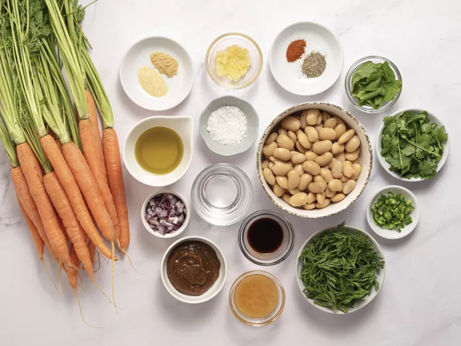
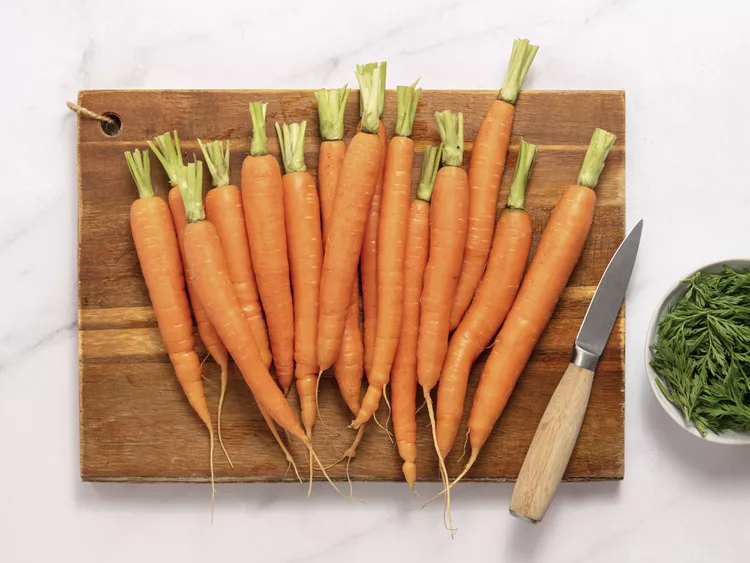
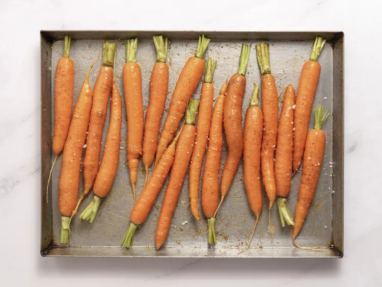
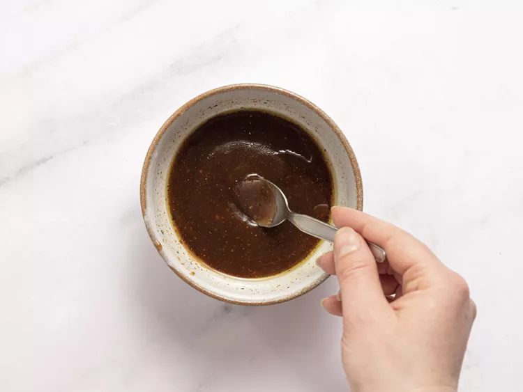
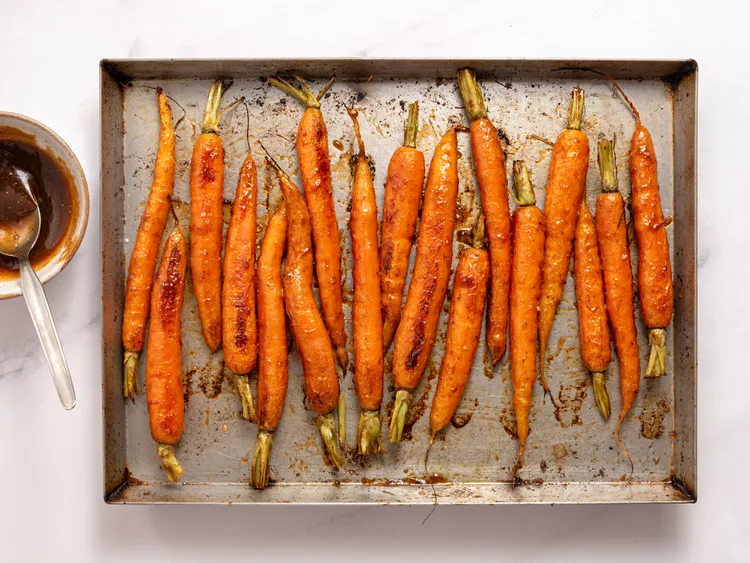
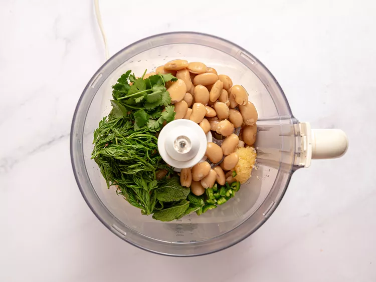

Home
Tamarind Glazed Carrots
Sweet carrots meet tangy tamarind in this elegant side dish or a vegetarian main. Carrots are roasted with spices and tossed in a sweet and tart tamarind glaze. Serve over a garlicky white bean puree and drizzle with extra tamarind mixture.
Ingredients
Tamarind Roasted Carrots
- 3 (14 ounces each) bunches young carrots with tops (about 2 pounds carrots)
- 3/4 teaspoon ground ginger
- 1/2 teaspoon granulated garlic
- 1/4 teaspoon cayenne pepper
- 3 tablespoons olive oil, divided
- 2 1/4 teaspoons kosher salt, divided
- 2 1/2 tablespoons tamarind paste
- 2 tablespoons honey
- 1 teaspoon coconut aminos
- 1/4 teaspoon black pepper
Carrot Top White Bean Dip
- 2 (15 ounce) cans white beans, drained and rinsed
- 1 cup fresh carrot tops
- 1/2 cup fresh cilantro leaves and tender stems
- 1/4 cup extra virgin olive oil
- 2 tablespoons fresh mint leaves
- 3 cloves garlic, grated
- 1 small green Thai chile, chopped (or to taste)
- 3/4 teaspoon kosher salt
- 1/4 cup ice cold water
- finely chopped red onion and fresh cilantro, for garnish
Directions
- Gather all ingredients.

- For Tamarind Roasted Carrots: Preheat the oven to 425 degrees F (220 degrees C). Trim and scrub carrots, reserving 1 cup of the carrot tops for the bean dip.

- Toss carrots with ginger, granulated garlic, cayenne pepper, 1 tablespoon of the olive oil and 1 1/2 teaspoons of the salt on a large rimmed baking sheet.

- Whisk together tamarind paste, honey, coconut aminos, black pepper, remaining 2 tablespoons oil, and 3/4 teaspoon salt in a small bowl until smooth; set aside.

- Roast carrots in the preheated oven until partially tender, about 20 minutes. Remove carrots from oven. Drizzle with about 1/4 cup of the tamarind mixture and turn to coat evenly. Return to oven and continue roasting until carrots are tender, browned, and sticky, about 5 minutes.

- Meanwhile, for Carrot Top White Bean Dip combine white beans, carrot tops, cilantro, olive oil, mint, garlic, chile, and salt in a food processor; process until mostly smooth, about 1 minute, stopping to scrape down sides as needed. With processor running, gradually pour in water and continue processing until mixture is very creamy, about 1 minute.

- Spread bean dip onto a serving platter and arrange roasted carrots on top. Drizzle with remaining tamarind mixture to taste. Garnish with chopped red onion and fresh cilantro.